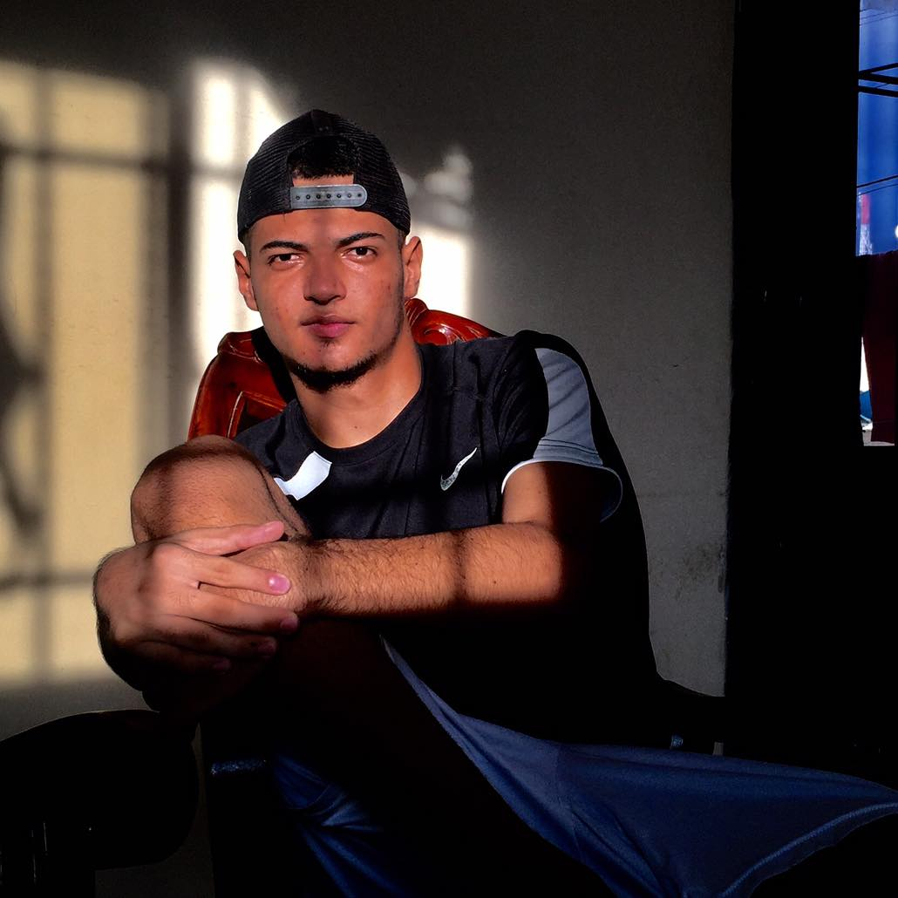

Currículo de César Badillo
Desarrollador Web
Experto en el manejo y construcción de bases de datos y experiencia en lenguajes php, python, html.
Educación
- Ingeniero de Sistemas
- 2017-2021. Universidad Tecnológica de Bolívar

Experiencia Profesional
- Empresa DISOLRED
- Diseñador y Desarrollador del sitio Web auténtico de la compañía.
Distinciones
- Bases de Datos
- Sobresaliente en dicho curso, creando, administrando y actualizando una base de datos auténtica.
- Ingeniería de Software
- Desarrolador de App Beads, aplicación desarrolada en el lenguaje python y html, la cuál maneja, guarda y administra gastos de una pareja,grupo social, familiar o de trabajo.
Otros
- Curso profesional de base de Datos
- Curso profesional de Android
- Curso profesional de Desarrollo Web